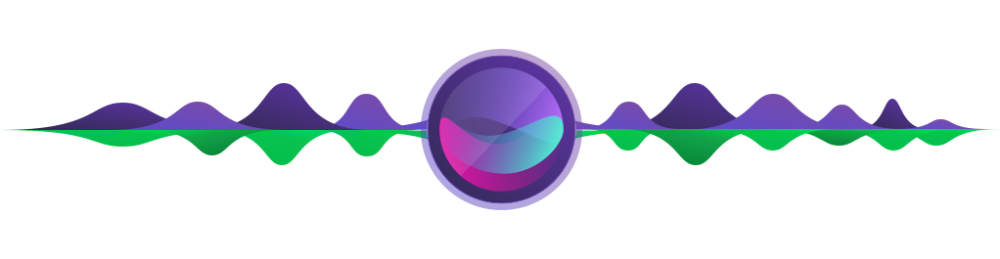

<div class="stream-mic-icon">
  <div class="img-wrapper">
      
      
  </div>
</div>
<div class="transcription-output">
  {{ transcription }}
</div>
<!-- <div class="main-div">
  <div class="voice-input">
      <div>
        
      </div>
      <div class="flex recording">
        <div class="recording-circle recording-circle-100"></div>
           <div class="recording-circle recording-circle-120"></div>
           <div class="recording-circle recording-circle-150"></div>
           <div class="processing-circle processing-circle-140"></div>
           <div class="processing-circle processing-circle-160"></div>
     </div>
  </div>
</div> -->